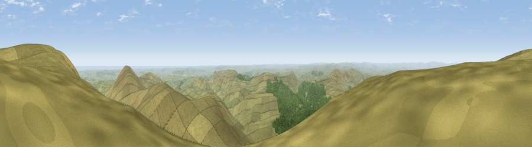

Viewpoint c12390_7807
#894 in England · top 4% of its area beats it · —The view, rendered

A 360° render of this exact spot computed from the terrain model, tree cover and land cover — summer colours, afternoon light, calibrated against photographs of famous viewpoints. Real trees, hedges and buildings will differ in detail.
The panorama
Grey silhouette: terrain skyline in each direction (720 bearings, Earth curvature and refraction included). Dashed green: skyline with trees (+15 m) and buildings (+8 m) as obstacles. Blue strip: how far the ground is visible on each bearing.
Where the view opens
Wedge length = distance to the farthest visible ground on that bearing (vegetation-aware). Rings at 10, 25 and 50 km.
What fills the view
85% grassland · 12% woodland · 1% water · 1% cropland
Angular shares of the visible panorama (visual magnitude), not map area. Landscape diversity 0.22 (0–1 Shannon).
Key numbers
More beautiful places nearby
The staircase of upgrades: each row has a higher view potential than everything closer. Driving times are estimates from straight-line distance, calibrated against real road routing — check an actual route before setting out.
| Place | Direction | Drive | Score |
|---|---|---|---|
| Viewpoint c12386_7791 | WSW · 1 km | ~3 min | 80.8 |
| Viewpoint c12415_7827 | NE · 2 km | ~4 min | 83.3 |
| Viewpoint c12396_7887 | E · 4 km | ~10 min | 85.7 |
| Viewpoint near Kirknewton | NNE · 10 km | ~20 min | 86.1 |
| Viewpoint near Chillingham | ENE · 19 km | ~32 min | 88.1 |
| Ullock Pike | SW · 112 km | ~137 min | 89.4 |
| Long Side | SW · 112 km | ~137 min | 89.5 |
| Viewpoint near Easington | SE · 130 km | ~154 min | 90.2 |
55.46901, -2.15380 · source: screening · position refined by local search. Computed location — check access rights before visiting.